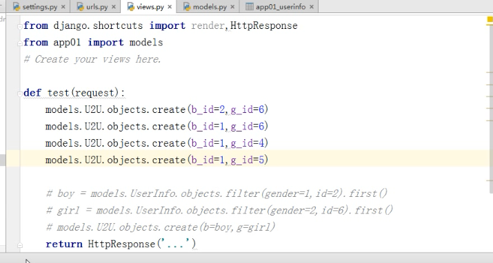

day75_19
1.1：内容概要
1：练习题
2：补充自关联
3：中间件
4：form组件
day75_20
##1.1：练习题讲解代码
1：csfr_token的写法
2：logout退出的逻辑
request.session.delete(request.session.session_key) 在服务端清除数据
request.session.clear() 设置客户端的超时时间为0
day75_359
1.1代码讲解-自关联
1.1：讲解了相关联的数据
day75_751
将男生表和女生表放在一起
1.1代码讲解-自关联
09-23处讲解到了上一节的数据库表关系的设计
重新设计到的表关系使用到的related_query_name
重新设计到的表关系使用到的related_name
related-name就是做方向查找使用到的，不论是一对多还是多对多
代码示例

代码示例2
day75_11_1_重新设计表结构
05:44
17:02处讲解到manytomany，不学，，，
day75_11_2_新闻评论的分析
示例
图示说明
表的model设计
day75_12_1_中间件讲解
如何自定义中间件
1：中间件的执行流程
图示：
2：中间件的自定义
-要继承自MiddlewareMixin
-要实现两个方法，process_request,process_response
-在settings中配置自己写的middleware
-在process_request，不可以return request，不可以return response，
如果return response 则不会经过视图函数
-在process_response，要记得return response
-middleware在settings中的顺序，依次执行
图示：